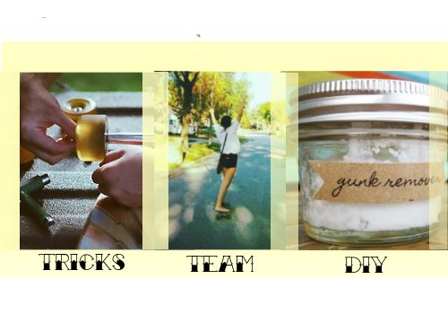
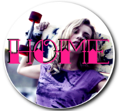

Gnarly! Shred It! Radical! Beefed It! Sick, Stoked, Sketchy!
Welcome to World of Longboarding! Whether you're into speedboarding, cruising, sliding, or carving, you still share the unique characteristic of being in love with an incredible sport. For those who are new to boarding and are wondering what the four different styles of longboarding are, they include:Upcoming Events

Date: Saturday November 10th
Rain Date: Sunday, November 11th
Location: Cape Henlopen State Park, Lewes, DE
Click Here for more info!
- Speedboarding The goal here is speed, so boards are designed with stability in mind. They tend to have a rigid deck which is lowered significantly. They have large wheels and large trucks as well.
- Cruising The goal here is a smooth easy ride. These longboards are designed to be responsive and stable at low speeds. The decks usually have quite a bit of flex in them and are still long like a speedboard. They tend to have slightly harder wheels than a speedboard but still relatively the same size. They are very smooth and easy to ride because they bend as you carve, sticking you to your board as you corner quickly.
- Sliding These boards are designed for sliding. They are usually fairly short and have kicktails on the front and the back. They have small hard wheels that slide very easily.
- Carving These boards are designed to carve really tight and fast. They have a shorter wheelbase than a cruiser and turn a lot faster too. They have wide soft wheels for maximum traction. People usually use these boards in slalmom races.